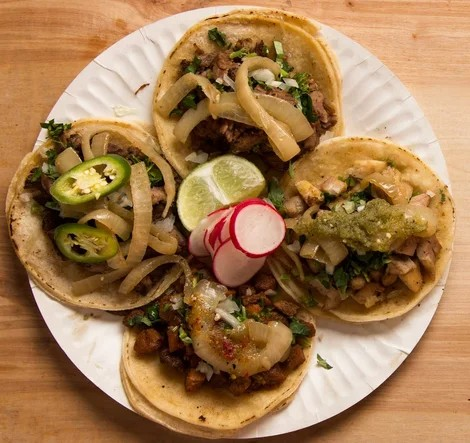

Tacos
Your choice of meat with onion, cilantro & salsa.
Taco truck · 809 Broadway · Vallejo
The yellow taco truck on Broadway that made the San Francisco Chronicle's Top Burritos in the Bay Area list. Crunchy suadero, two great salsas, big super burritos.
The truck
La Piñata is a yellow lonchera parked at 809 Broadway, serving authentic Mexican food made with fresh, quality ingredients: tacos, tortas, quesadillas, nachos, super burritos and shrimp dishes, plus horchata and agua de jamaica.
In 2025 Yelp ranked La Piñata #6 on its all-time list of the Top 100 Food Trucks in the US, and the San Francisco Chronicle put it on its Top Burritos in the Bay Area list back in November 2022. Some customers drive in from San Francisco for it.

Menu
Pick your meat: Asada, Al Pastor, Suadero, Carnitas, Pollo, Lengua, Cabeza, or Chorizo.
Your choice of meat with onion, cilantro & salsa.
Any meat. Comes with pickled veggies, chips, and red & green salsa.
With grilled onions & grilled bell peppers.
Online menu listing (mid-2026)
Grilled onions, grilled bell peppers & lettuce.
Online menu listing (mid-2026)
Fan favorite: steak & shrimp nachos.
Ask at the window for today's options.
Horchata or jamaica.
Online menu listing (mid-2026)
Online menu listing (mid-2026)
Online menu listing (mid-2026)
$0.25 on tacos, $1 on burritos.
Online menu listing (mid-2026)
Menu and prices from public online menu listings (mid-2026). Prices may have changed, so call (707) 334-8381 to confirm.
Good to know
In the news
“Our latest obsession is this taco truck. Service is always awesome, employees are always pleasant, and service is fast. Today they packed our food [chicken tacos and super carne asada burritos] with everything extra: plenty of red and green salsa, chips and extra grilled onion/jalapeno. Everything was delicious.”
“A Suadero Super Burrito from La Piñata might be one of the best things to eat in Vallejo — it’s in the top five at least.”
Reviews
Yelp rating as shown on Apple Maps; Yelp review count as shown on Roadtrippers’ Yelp-powered listing (Oct 2026).
“suadero super burrito 10/10 would recommend. best burrito i’ve had in a minute! my sister got a al pastor taco which was a also very good. solid salsa (red one is sooo good) and food comes with pickles veggies which i love. also jamaica and horchata are both great. the horchata has a little coconut flavor. we live in the city and this beats out the options there. i’d consider driving up for this food tysm <3”
“La Piñata has been my favorite taco truck in Vallejo for years. Even after moving away, I still compare every taco spot to this one.”
“This is by far the best burrito place in Vallejo hands down. In every bite of my steak and shrimp burrito you can taste the freshness of all the ingredients. He always gives me a free drink when I come. I can appreciate that level of consistent exceptional customer service. Highly Recommended La Piñata !!”
“I came here after hearing such great things about La Pinata's suadero burritos, and they did not disappoint at all! This is a food truck with incredibly kind, hardworking staff…”
“La Piñata is so good. I come from San Francisco for it and always get it when I’m in the area. The owner and staff have amazing customer service and the food is always good and fresh. I don’t usually leave reviews but it’s worth it. My go to is the chicken and shrimp burrito and the steak and shrimp nachos. Chefs kiss!”
“Monster sized burritos, satisfying eats, actual REAL avocado slices instead of weird guacamole, lots and lots of outdoor seating, plus, ...wait for it.....access to an INDOOR restroom…”
“Easily the best Taqueria in Vallejo NGL 🔥 2 Super Steak Burritos w/everything 2 Tacos-1 asada, 1 carnitas Didn't have to ask for extra sauce , customer service was A+ . 50 min drive was 100% worth it, will def be back”
“I got their lengua, cabeza and carnitas tacos. The most was so tender and flavorful. I don't feel like many do their lengua well, but theirs are definitely one of my favorites. Their salsas are both really good and have a lot of flavor.”
“I really like to this place. I mean it's just a taco trailer but the food was good and hardy. The service was quick. And the guy running the thing was pretty nice.”
Quoted word for word from public Google and Yelp reviews. Yelp excerpts are shortened where Yelp's public listings shorten them (…). Google doesn't show reviewer names in the public excerpts we used.
FAQ
Yes. Google reviewers say La Piñata takes orders over the phone, which helps you skip the line. Call (707) 334-8381.
Monday to Friday, 11 AM to 9 PM. Closed Saturday and Sunday.
Yes, cash and cards. A Google reviewer noted an extra charge for paying by card (August 2025).
The suadero super burrito is the one the San Francisco Chronicle singled out. Reviewers also rave about the al pastor, lengua, carnitas and shrimp burritos.
Yes, catering is available per Visit Vallejo and Apple Maps. Call the truck to ask.
There are outdoor picnic tables, and parking is mostly on the street.
Per Google popular times, Friday around 6 PM, with waits up to about 15 minutes.
Visit
| Monday | 11 AM – 9 PM |
| Tuesday | 11 AM – 9 PM |
| Wednesday | 11 AM – 9 PM |
| Thursday | 11 AM – 9 PM |
| Friday | 11 AM – 9 PM |
| Saturday | Closed |
| Sunday | Closed |
Closed weekends. Cards accepted (a reviewer notes an extra card charge). Catering available, so call to ask.
Call ahead and your order will be ready at the truck, Monday through Friday.
Call to order ahead